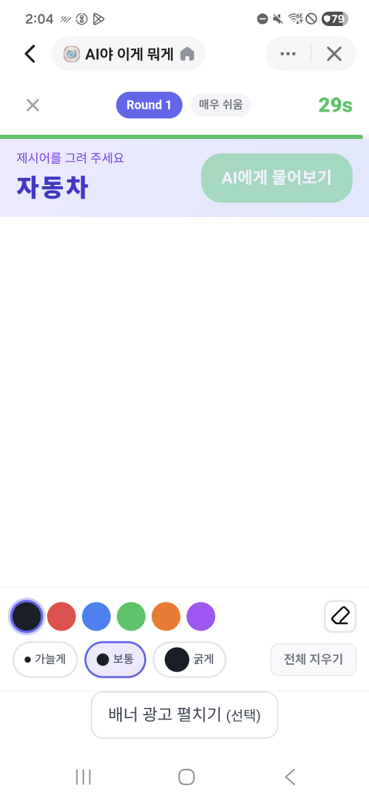
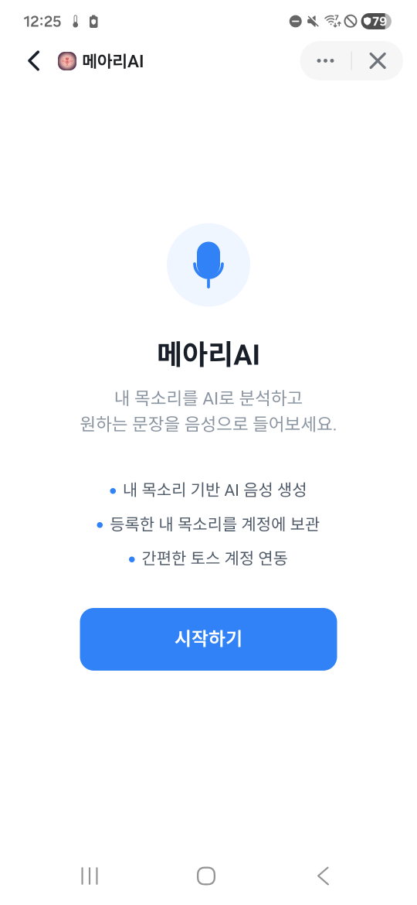

01
잘 나온 사진 네 장.
같이 두면 더 좋으니까.
같이 두면 더 좋으니까.

사진 네 장을 모으고, 동그라미 하나를 그리고.
지금 손이 가는 걸 하나 골라보세요.


적을 직접 조준하고, 탄창을 다시 채우고, 다음 전투를 준비해요. 첫 30초 방어부터 시작하는 슈팅 디펜스.
토스에서 첫 전투 시작하기 ↗화면·이용 안내

제시어를 보고 30초 안에 특징을 그려요. 예쁘게 그리는 것보다 AI가 알아볼 단서를 남기는 게 먼저.
AI에게 그림 보여주기 ↗화면·이용 안내

내 음성을 등록하고 문장을 적으면, 그 목소리를 바탕으로 AI 음성을 만들어요. 만든 음성은 다시 듣고 내보낼 수 있어요.
내 목소리로 문장 만들기 ↗화면·이용 안내
연애 사주와 궁합 풀이를 읽으며 대화의 실마리를 찾아보세요. 상대의 마음을 단정하기보다 이야기를 시작하는 참고로.
연애 사주·궁합 읽어보기 ↗화면·이용 안내